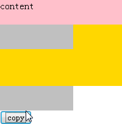

SD9029: 各浏览器下在向文档树中插入通过 cloneNode(true) 创建的节点时，其内的 SCRIPT 元素中的脚本执行有差异
标准参考
在 DOM-Level-2-Core 中定义复制节点的方法是 cloneNode ，该方法会复制当前节点，cloneNode 方法有一个布尔型参数，当参数为 false 时，仅复制当前节点以及属性，当参数为 true 时，将递归复制当前节点的所有子节点 (在本文中简称：深度复制)。概念请参见 DOM-Level-2-Core 规范：1.2. Fundamental Interfaces Document。
问题描述
各浏览器下在向文档树中插入通过 cloneNode(true) 创建的节点时，其内的 SCRIPT 元素中的脚本在 Chrome 和 Safari 中会执行，在 IE Firefox Opera 中没有执行。
注：本文中所提脚本，若没有特别指明则该脚本不包括 document.write 或 document.writeln。
造成的影响
该问题导致代码功能在部分浏览器中失效。若脚本中包含 document.write 或者 document.writeln，则在 Chrome Safari 中可能使原页面内容被清除。
受影响的浏览器
| 所有浏览器 |
|---|
问题分析
分析以下代码：
<!DOCTYPE HTML>
<HTML>
<HEAD>
</HEAD>
<BODY>
<div id="C" style="width:200px;height:40px;background: pink;"></div>
<div id="A" style="width:200px;height:100px;background: gold;">
</div>
<div id="B" style="width:120px;height:40px;background: silver;">
<script language="JavaScript">
document.getElementById("C").innerHTML+="content ";
</script>
</div>
<button onclick="copy()">copy</button>
</BODY>
</HTML>
<script language="JavaScript">
function copy(){
var A=document.getElementById('A');
A.appendChild(document.getElementById('B').cloneNode(true));
}
</script>
上述代码中，深度复制 id='B' 的 DIV ，并把深度复制后的节点使用 appendChild 方法插入到文档树中，添加到 id='A' 的 DIV 中, id='B' 的 DIV 中包括一段脚本，该脚本给 id='C' 的 DIV 中增加内容。
点击 copy 按钮时，以上代码在不同浏览器中表现如下：
| IE Firefox Opera | Chrome Safari |
|---|---|
|  |  |
可见，
- IE Firefox Opera 没有执行被深度复制节点中的脚本。
- Chrome Safari 执行了被深度复制节点中的脚本。
被深度复制的节点本身就是脚本，且该脚本由外部文件引入，那么在各浏览器又会是如何表现？
分析以下代码：
<!DOCTYPE HTML>
<HTML>
<HEAD>
</HEAD>
<BODY>
<div id="A" style="width:200px;height:200px;background: gold;">
</div>
<script id="B" language="JavaScript" src="test.js">
</script>
<button onclick="copy()">copy</button>
</BODY>
</HTML>
<script language="JavaScript">
function copy(){
var A=document.getElementById('A');
A.appendChild(document.getElementById('B').cloneNode(true));
}
</script>
test.js 文件中仅有一行代码，即：alert(1);
点击 copy 按钮时，以上代码在不同浏览器中表现如下：
| IE Chrome Safari | Firefox Opera |
|---|---|
 |
 |
可见，每次深度复制节点，如果脚本以外引方式引入时，
- IE Chrome Safari 会执行外引脚本代码。
- Firefox Opera 不会执行外引脚本代码。
当被深度复制节点中使用 SCRIPT 元素引入的脚本中包含 document.write 或 document.writeln 时， 那么在各浏览器又会是如何表现？分析以下代码：
<!DOCTYPE HTML>
<HTML>
<HEAD>
</HEAD>
<BODY>
<div id="A" style="width:200px;height:100px;background: gold;">
</div>
<div id="B" style="width:120px;height:40px;background: silver;">
<script language="JavaScript">
document.write("content");
</script>
</div>
<button onclick="copy()">copy</button>
</BODY>
</HTML>
<script language="JavaScript">
function copy(){
var A=document.getElementById('A');
A.appendChild(document.getElementById('B').cloneNode(true));
}
</script>
点击 copy 按钮时，Chrome 和 Safari 的表现会明显的和其他浏览器不一样：
| IE Firefox Opera | Chrome | Safari |
|---|---|---|
 |
 |
 |
根据现象可见：
- Safari 中页面原内容消失。
- Chrome 中页面原内容消失，同时把 document.write 或 document.writeln 中的内容输出到页面。
- IE Firefox Opera 中把深度复制后的节点加入到文档树中。1
注 1：首次加载页面时， id='B' 的 DIV 中 SCRIPT 会执行，B 中包括 document.write 的内容，所以每次复制时，页面会有 content。
关于此问题的汇总表如下：(yes 表示脚本正常执行，no 表示脚本未执行，error 表示脚本抛出异常)
| IE | Firefox | Opera | Chrome | Safari | |
|---|---|---|---|---|---|
| 被深度复制节点内包含 SCRIPT 元素中的脚本 | no | no | no | yes | yes |
| 被深度复制节点内包含外部引入脚本 | no | no | no | yes | yes |
| 被深度复制节点内包含 SCRIPT 元素中的脚本中有 document.write 或 document.writeln | no | no | no | yes | error |
| 被深度复制节点内包含外部引入脚本中有 document.write 或 document.writeln | no | no | no | yes | error |
| 被深度复制的节点本身就是脚本 | no | no | no | yes | yes |
| 被深度复制的节点本身就是脚本，且该脚本由外部文件引入 | yes | no | no | yes | yes |
| 被深度复制的节点本身就是脚本，脚本中有 document.write 或 document.writeln | no | no | no | yes | error |
| 被深度复制的节点本身就是脚本，且该脚本由外部文件引入，外部脚本中有 document.write 或 document.writeln | no | no | no | yes | error |
根据上表可做如下总结：
- 在向文档树中插入通过 cloneNode(true) 创建的节点，其内的 SCRIPT 元素中的脚本在 Chrome 和 Safari中会执行，在 IE Firefox Opera中没有执行；
- 在向文档树中插入通过 cloneNode(true) 创建的节点，其内的该脚本由外部文件引入时，Chrome、Safari、IE 会执行，Firefox Opera中没有执行；
- 在向文档树中插入通过 cloneNode(true) 创建的节点，其内的该脚本包括 document.write 或 document.writeln 时，在 IE Firefox Opera中没有执行，Chrome 和 Safari 均有异常表现。
解决方案
避免深度复制 "cloneNode(true)" 包含 SCRIPT 元素的节点。
参见
知识库
相关问题
测试环境
| 操作系统版本: | Windows 7 Ultimate build 7600 |
|---|---|
| 浏览器版本: |
IE6 IE7 IE8 Firefox 3.6.10 Chrome 7.0.517.8 dev Safari 5.0.2 Opera 10.62 |
| 测试页面: | cloneNode.html writecloneNode.html cloneNodescript.html |
| 本文更新时间: | 2010-09-17 |
关键字
cloneNode true SCRIPT 复制节点 克隆